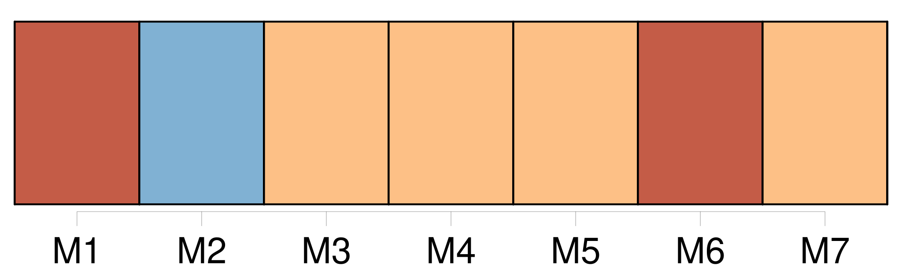
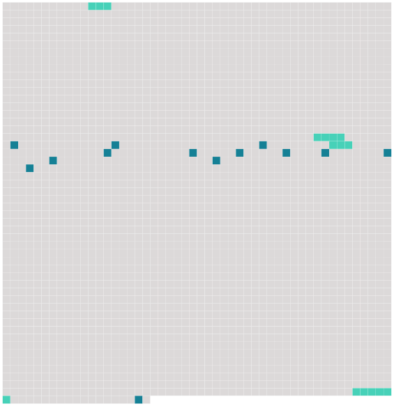

Longueur nb maillons : 17 mentions |
  |
Il en avait même commencé un ; il avait fait poser [son ami Marjolin] et cette gueuse de Cadine ; mais c'était dur, c'était trop beau, ces diables de légumes, et les fruits, et les poissons, et la viande!! [32 phrases] — C'est [ce diable de Marjolin] , dit le peintre sans répondre. [Il] est, pour sûr, dans quelque gouttière, à moins qu' [il] n'ait passé la nuit avec les bêtes de la cave aux volailles ……
J'ai besoin de [lui] pour une étude. Et il raconta que [son ami Marjolin] fut trouvé, un matin, par une marchande, dans un tas de choux, et qu' [il] poussa sur le carreau, librement. Quand on voulut [l'] envoyer à l'école, [il] tomba malade, il fallut [le] ramener aux Halles. [Il] en connaissait les moindres recoins, les [aimait] d'une tendresse de fils, [vivait] avec des agilités d'écureuil, au milieu de cette forêt de fonte. Ils faisaient un joli couple, [lui] et cette gueuse de Cadine, que la mère Chantemesse avait ramassée, un soir, au coin de l'ancien marché des Innocents.
[Lui] , était splendide, ce grand bêta, doré comme un Rubens, avec un duvet roussâtre qui accrochait le jour ; elle, la petite, futée et mince, avait un drôle de museau, sous la broussaille noire de ses cheveux crépus. [51 phrases]
Brusquement, il aperçut, dans la foule qu'il dominait, [une tête blonde aux larges cheveux] , suivie d'une petite tête noire, toute crépue et ébouriffée. [1 phrases] [Marjolin] !! |
 |
La ressource peut être téléchargée sur la page Ortolang
Si vous avez des questions ou vous voyez des erreurs, merci d'envoyer un mail à silvia.federzoni89@gmail.com
Site développé par S. Federzoni (contact)